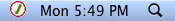
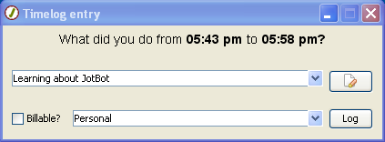
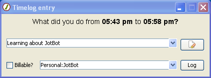
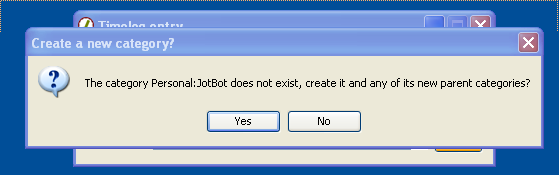
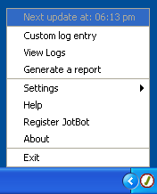

button and a section for detailed notes
will be displayed.
button and a section for detailed notes
will be displayed.
Unlike most applications that have a window that remains open while the application is running, JotBot lives unobtrusively in the "system tray" area of your desktop. On Windows this is in the bottom right hand corner, on Mac OSX this is in the upper right hand corner. To use the features of JotBot, you simply right click (left click on Mac) on the icon to get the JotBot menu.
| Windows | |
| Mac |  |

By default, the log window will appear
every 15 minutes. You can change this in the options screen. When the log screen appears,
type into the upper box what you've been doing. If you need more space you can
click on the button and a section for detailed notes
will be displayed.
There are two categories by default, "Personal" and "Work". You can create a new category by simply typing in a new name. If you would like a sub-category, separate the sections with a colon.

Click log to submit your entry. If you used a category that does not exist, you will asked if you meant to create a new category. This helps prevent accidentally logging entries under categories that have typos in them.

If you want to log an entry without waiting for a full interval you can choose "Custom log entry" from the JotBot menu.

This will bring up a window similar to the normal log window.

On this window, the time is
editable but defaults to the time interval at the point when you opened the window. If
you need to make a log for a different day, you can change the date by clicking on the
 icon which will expand a date
selection area.
icon which will expand a date
selection area.
To view your log entries choose "View Logs" from the JotBot Menu. The log viewer shows all log entries that match the current filter. The default filter is "Today" and you can change this by selecting from the list of filters at the top of the window. If you want to create a custom filter, you can choose the bottom option, "Add custom filter". You can also edit any filter by selecting the filter and then clicking the edit button. For more information on custom filters please see the Custom filters section.
The log viewer shows most of the data associated with a log entry in 5 columns. The only data not shown is the details text, which you can access by double clicking on an entry. By default, the logs are sorted by date with the most recent entry listed first. You can change this sorting by clicking on any column header. You can also rearrange the order of your columns by dragging and dropping them.
A report is similar to the log view except that similar logs are grouped together. The logs that are displayed are those that match the currently selected filter as with the log view screen. Adding and editing a filter is accomplished the same way as on the log view screen. For detailed information on creating and editing filters please see the Custom filters section.
The report view shows all of the top level categories along with the total cumulative time for all displayed logs in those categories. The default ordering of items in the report is by name and you can change this by clicking on the header of any column. Click on the + symbol (Windows) or the arrow (Mac) next to the category name to expand the contents of the category. Inside the category you will see any sub-categories as well as all logs that belong to that category, each with individual time and billing details. As in the log view you can double click on an entry to see its details.
Each sub-category shows the total time for all of its log entries and the log entries of any further sub-categories.
Custom filters allow you to customize the data that is shown on the log view and the report screens. Filters are shared between these screens and any changes you make to filters on one will be reflected on the other.
Filters require a name and one or more conditions. Filters may have any number of conditions. Editing a condition is as simple as choosing what kind of condition you want (either Date, Category or Billable) and then either choosing from a pre-set list of dates or filling in specific criteria such as for a category name.
You can add more conditions by clicking on the green plus button next to the last condition. Only data that matches all of the listed conditions will be shown.